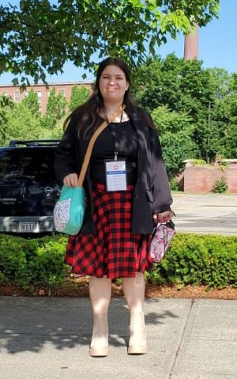

Hello! My name is Elizabeth Clayton, this is my resume. I am a junior in Crooms Academy of Information Technology. I am currently a BSA scout, and I am working on my eagle project. I have been involved in many different volunteering projects and have more planed in the future. After school I help run a club for kids in my school, it’s a club where we get together to do crafts and watch anime. Over the summers I do judo, I am a orange belt. I am CPR certified, and I have been trained in survival skills. I have extensive experience in sales, I have been doing popcorn sales and gift card sales in front of stores for six years now.
I have recently been invited to the Conference for Future Medical Leaders at Harvard! During it we got to watch a live surgery, and hear speeches from famous people such as Mario Capecchi, Mary E. Klotman, Gregg Semenza, Elaine Fuchs, Stephan Ray Mitchell, and many others. The conference allowed for me to meet winners of Nobel Prizes, Award winning young inventors/scientists, Prominent medical school deans, Leaders in medicine, and medical futurists.
I have been involved in photography for about six years now! I find that photography is very fun, and I quite enjoy taking photos of flowers and animals. People not so much.